1. ภาพรวมและกติกาของระบบ
ระบบใช้จองรถบริษัท รับรถ คืนรถ และติดตามสถานะรถ ผู้ใช้แบ่งเป็น 3 กลุ่ม แต่ละกลุ่มเห็นเมนูไม่เหมือนกัน
พนักงาน / ผู้ขับ
- จองรถ ดูคิวว่าง
- รับรถ คืนรถ
- ดูประวัติการจองของตัวเอง
เจ้าหน้าที่ รปภ.
- จดเลขไมล์และสภาพรถตอนรถกลับเข้าบริษัท แทนผู้ขับ
- ตามรถที่ยังไม่คืน
แอดมิน
- จัดการรถ การจอง ผู้ใช้
- ตั้งจุดพิกัด ดูรายงานและบันทึกระบบ
- ปิดงานแทนผู้ขับ
วงจรของการจอง
| สถานะ | ความหมาย | เกิดขึ้นเมื่อ |
|---|---|---|
| จองแล้ว (ป้าย "รอเช็คอิน") | จองคิวไว้แล้ว ยังไม่ถึงเวลาไป | กดยืนยันการจอง |
| ขาไป (ป้าย "กำลังใช้งาน") | รถอยู่กับผู้ขับ | ถึงเวลาไปที่จอง ระบบเช็คอินให้ หรือผู้ขับสแกนรับรถเอง |
| คืนแล้ว | บันทึกการคืนและเลขไมล์แล้ว | ผู้ขับ/รปภ./แอดมินบันทึกคืน หรือระบบปิดอัตโนมัติรอบ 20:00 |
| ยกเลิก | ยกเลิกก่อนถึงเวลารับรถ | ผู้ขับหรือผู้จองกดยกเลิก หรือแอดมินยกเลิก |
| ยกเลิก (ไม่ได้ใช้รถ) | รถถูกเช็คอินแล้วแต่ไม่ได้ใช้จริง ปล่อยรถคืน | กดปุ่ม "ไม่ได้ใช้รถ" |
| ยกเลิก (ไม่มาใช้งาน) | ผ่านเวลากลับไปแล้วโดยไม่มีใครมารับรถ | ระบบปล่อยคิวเอง |
ป้ายอื่นที่เห็นในหน้าแอดมิน: เลยเวลาคืน (ขาไปและเกินเวลากลับที่จอง) • คืนช้า (คืนแล้วแต่เกินเวลากลับ 60 นาที) • ข้ามคืน (จองให้กลับเช้าวันถัดไป) • ไม่มาใช้งาน
รหัสจอง
กติกาที่ระบบบังคับ (ทุกคนควรรู้)
| เรื่อง | กติกา |
|---|---|
| จองล่วงหน้า | ได้ไม่เกิน 90 วัน |
| เวลาไป-กลับ | เวลาไปและเวลากลับ ห้ามเป็นเวลาเดียวกัน ถ้าเวลากลับน้อยกว่าเวลาไป ระบบถือว่า ข้ามคืน (กลับเช้าวันถัดไป) |
| จองซ้อน | รถคันเดียวกันจองช่วงเวลาซ้อนกันไม่ได้ และ ผู้ขับคนเดียวกันก็จองเวลาชนกันไม่ได้ |
| เวลาที่ผ่านมาแล้ว | จองช่วงเวลาที่ผ่านไปแล้วไม่ได้ |
| รถเช็คระยะ/ซ่อม | จองไม่ได้ จนกว่าจะถึงวันที่คาดว่าเสร็จ (วันนั้นเองยังรอแอดมินกดยืนยันว่ารถพร้อม) |
| ผู้ร่วมเดินทาง | ได้ประมาณ 40 คนต่อการจอง |
| เช็คอินรับรถเอง | ทำได้ล่วงหน้าก่อนเวลาไป ไม่เกิน 60 นาที (ถึงเวลาไปแล้วระบบเช็คอินให้เอง) |
| เวลาคืนรถ | ห้ามเป็นเวลาในอนาคต (เกิน 10 นาทีจากปัจจุบัน) และห้ามก่อนเวลารับรถ |
| เลขไมล์ตอนคืน | ต้องมากกว่าเลขไมล์ตอนออกเสมอ (เลขไมล์ไม่ลดลง) ถ้าวิ่งเกิน 1,500 กม. ในทริปเดียว ผู้ขับบันทึกเองไม่ได้ ต้องให้แอดมินบันทึก |
| ใครคืนรถแทนได้ | เฉพาะผู้ขับตัวจริงของรายการ (หรือแอดมิน/รปภ.) |
2. พนักงาน / ผู้ขับ
ใช้ได้ทั้งบนคอมพิวเตอร์และมือถือ แถบเมนูบนสุด: หน้าหลัก • จองรถ • เช็กคิว • การจองของฉัน (มือถือมีแถบล่าง: หน้าหลัก เช็กคิว ปุ่ม + จอง ประวัติ ฉัน)
2.1 สมัครสมาชิกและเข้าสู่ระบบ
สมัครสมาชิก (ทำครั้งเดียว)
- เปิดหน้าเข้าสู่ระบบ กดลิงก์ สร้างบัญชีใหม่ (ใต้ปุ่มเข้าสู่ระบบ)
- ส่วนที่ 1 บัญชีผู้ใช้
- ชื่อผู้ใช้งาน (Username) — ภาษาอังกฤษหรือตัวเลข ห้ามเว้นวรรค
- รหัสผ่าน — อย่างน้อย 6 ตัว มีแถบบอกความแข็งแรง (ยิ่งยาวและผสมตัวอักษร/ตัวเลขยิ่งปลอดภัย) กดรูปตาเพื่อดูรหัสที่พิมพ์
- ยืนยันรหัสผ่าน — พิมพ์ซ้ำให้ตรงกัน
- ส่วนที่ 2 ข้อมูลพนักงาน
- ชื่อจริง / นามสกุล — ภาษาไทย
- รหัสพนักงาน — พิมพ์สั้นได้ เช่น
91ระบบเติมศูนย์ให้เป็น00091รหัสนี้ใช้ตอนจองและตอนลืมรหัสผ่าน และ แก้เองภายหลังไม่ได้ (ล็อกระบบ) - ฝ่าย → แผนก → หน่วยงาน — เลือกจากรายการตามลำดับ (เลือกฝ่ายก่อน รายการแผนกถึงจะขึ้น)
- ส่วนที่ 3 ช่องทางติดต่อ — เบอร์โทรศัพท์ และอีเมล
- กดสร้างบัญชี แล้วกลับมาเข้าสู่ระบบ
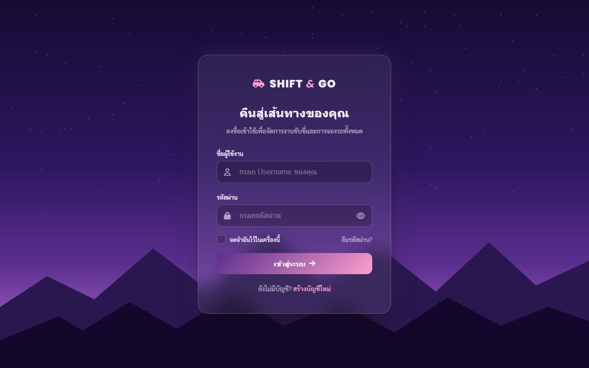
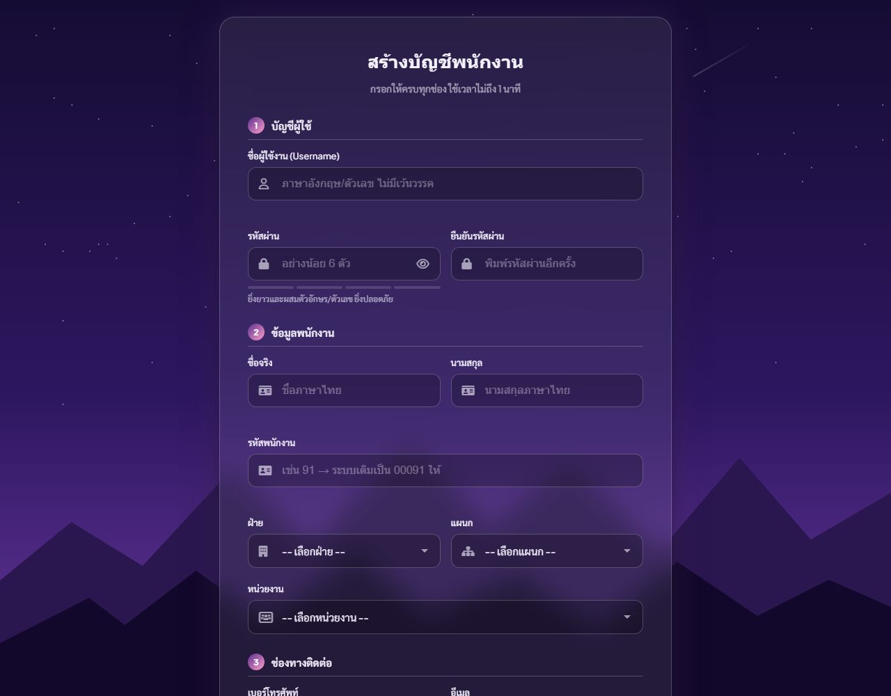
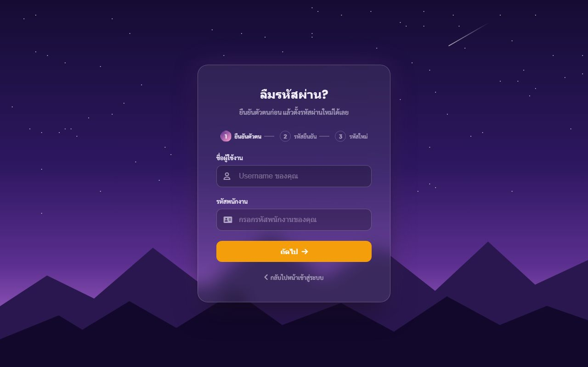
เข้าสู่ระบบ / ออกจากระบบ
- ใส่ชื่อผู้ใช้งานและรหัสผ่าน ติ๊ก จดจำฉันไว้ในเครื่องนี้ ได้ถ้าเป็นเครื่องส่วนตัว (อย่าติ๊กบนเครื่องสาธารณะ) แล้วกด เข้าสู่ระบบ
- ออกจากระบบ: คลิกวงกลมรูปโปรไฟล์มุมขวาบน → ข้อมูลผู้ใช้ → ปุ่ม ออกจากระบบ
ลืมรหัสผ่าน
- กด ลืมรหัสผ่าน? ใส่ชื่อผู้ใช้งานและรหัสพนักงาน
- ระบบตรวจว่าชื่อผู้ใช้กับรหัสพนักงานเป็นของบัญชีเดียวกัน ถ้าระบบเปิดใช้อีเมล จะส่ง รหัสยืนยัน 6 หลัก ไปที่อีเมลที่ลงทะเบียนไว้ (ใช้ได้ 10 นาที) ให้ใส่รหัสนั้น
- ตั้ง รหัสผ่านใหม่ และยืนยันรหัสผ่านใหม่ แล้วกดบันทึกรหัสผ่านใหม่
ถ้ารหัสยืนยันไม่มา หรือไม่มีอีเมลที่ใช้ได้ในระบบ ให้แจ้งแอดมินตั้งรหัสผ่านใหม่ให้ที่หน้า "บัญชีผู้ใช้" ถ้าลองผิดหลายครั้งติดกัน ระบบจะหน่วงให้รอสักครู่
2.2 เช็กคิว — ดูว่ารถคันไหนว่างเมื่อไหร่
- กดเมนู เช็กคิว (หรือปุ่ม "ดูคิวรถว่าง" ที่หน้าหลัก)
- ขั้น 1 เลือกวันที่ — เลือกเดือนด้านขวาบน แล้วแตะวันที่ในแถบวัน (วันนี้มีจุดสีฟ้า)
- ขั้น 2 เลือกรถ — การ์ดรถแต่ละคันมีป้ายสถานะของวันนั้น: ว่าง / กำลังใช้งาน / เช็คระยะ/ซ่อม แตะการ์ดเพื่อเลือก
- ขั้น 3 ดูตารางเวลา — ตารางแสดงช่วงที่ถูกจองและช่วงที่ว่างของรถคันนั้น
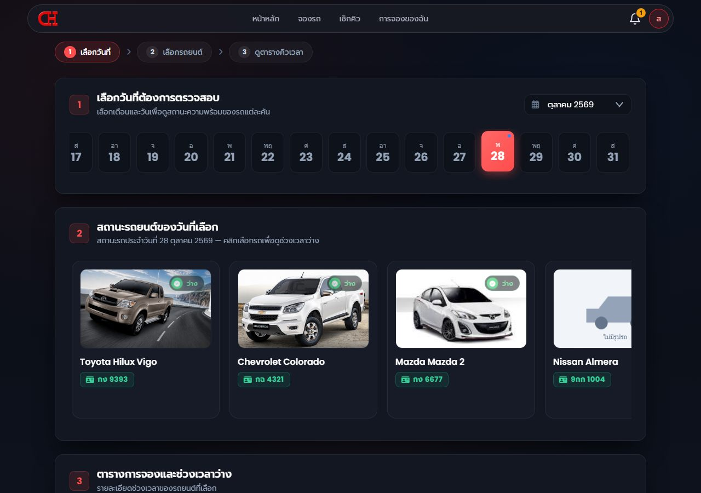
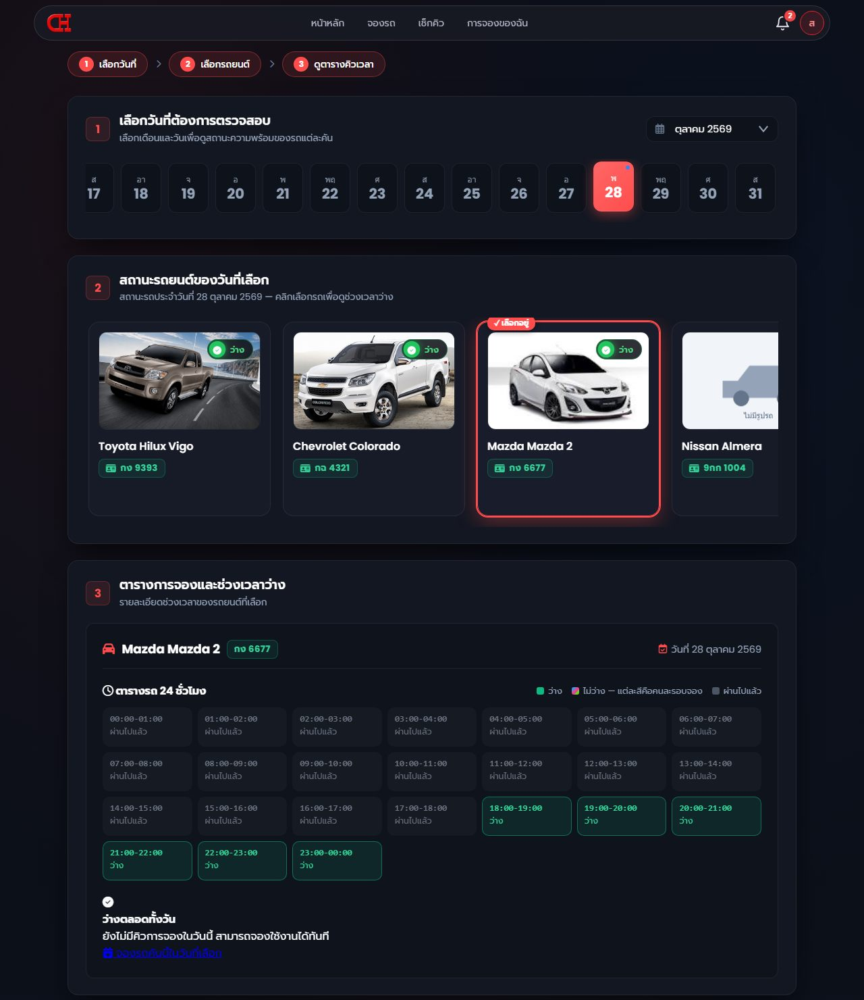
2.3 จองรถ
- กดเมนู จองรถ ที่หน้าจะมีแท็บ ขาไป (ยืมรถ) และ ขากลับ (คืนรถ) เลือก "ขาไป (ยืมรถ)"
- เลือกวันจากปฏิทินด้านซ้าย (หรือแถบวันบนมือถือ) แล้วเลือกรถจากรายการ ตารางด้านขวาแสดงว่าชั่วโมงไหนว่าง (ช่องสีเขียว = ว่าง, ช่องสี = มีคนจองแล้ว, แถบสีส้มด้านซ้าย = กำลังใช้งานอยู่, สีเทา = ผ่านไปแล้ว)
- กดปุ่ม + จองรถ (วงกลมสีม่วงมุมขวาล่าง) ฟอร์มมี 4 ส่วน:
- ผู้ขับ — พิมพ์ รหัสพนักงาน ระบบเติม ชื่อผู้ขับ ให้เอง (จองแทนคนอื่นได้ โดยใส่รหัสของผู้ขับคนนั้น)
- รถที่ใช้ — เลือกทะเบียนรถ เลขไมล์เริ่มต้น ขึ้นให้เองจากการคืนล่าสุด ตรวจว่าตรงกับหน้าปัดจริง
- วันและเวลา — วันที่ใช้งาน (กดไอคอนปฏิทิน) เวลาไป และ เวลากลับ (โดยประมาณ) เลือกได้ละเอียดตลอด 24 ชั่วโมง ถ้าเลือกเวลากลับน้อยกว่าเวลาไป จะขึ้นข้อความ "ข้ามคืน"
- รายละเอียดการเดินทาง — สถานที่ไป (เช่น โรงงาน 2, ลูกค้า A) และ ผู้ร่วมเดินทาง (ไม่บังคับ) ค้นหาด้วยรหัสพนักงาน ชื่อ หรืออีเมล แล้วเลือกเพิ่มได้หลายคน
- จองซ้ำทุกสัปดาห์ (วัน-เวลาเดิม) — ถ้าใช้ประจำ เลือก อีก 1 / 2 / 3 / 4 / 8 สัปดาห์ ระบบจองทีละสัปดาห์ สัปดาห์ไหนชนกับคิวอื่นจะข้ามและสรุปให้ เช่น "จองสำเร็จ 3 จาก 4 สัปดาห์ (ข้ามวันที่ติดจอง: …)"
- กด ยืนยันการจอง ระบบแสดง รหัสจอง ให้จดไว้
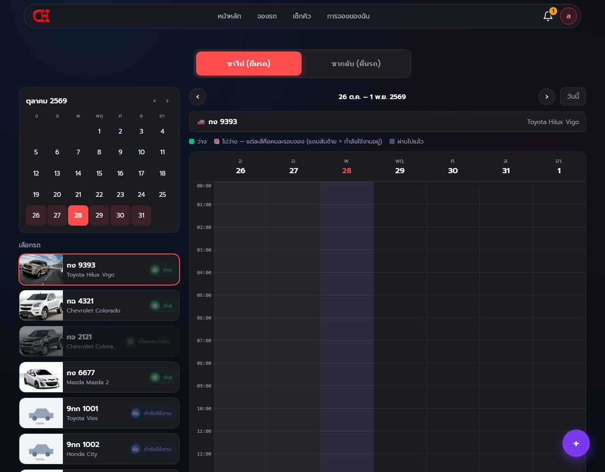
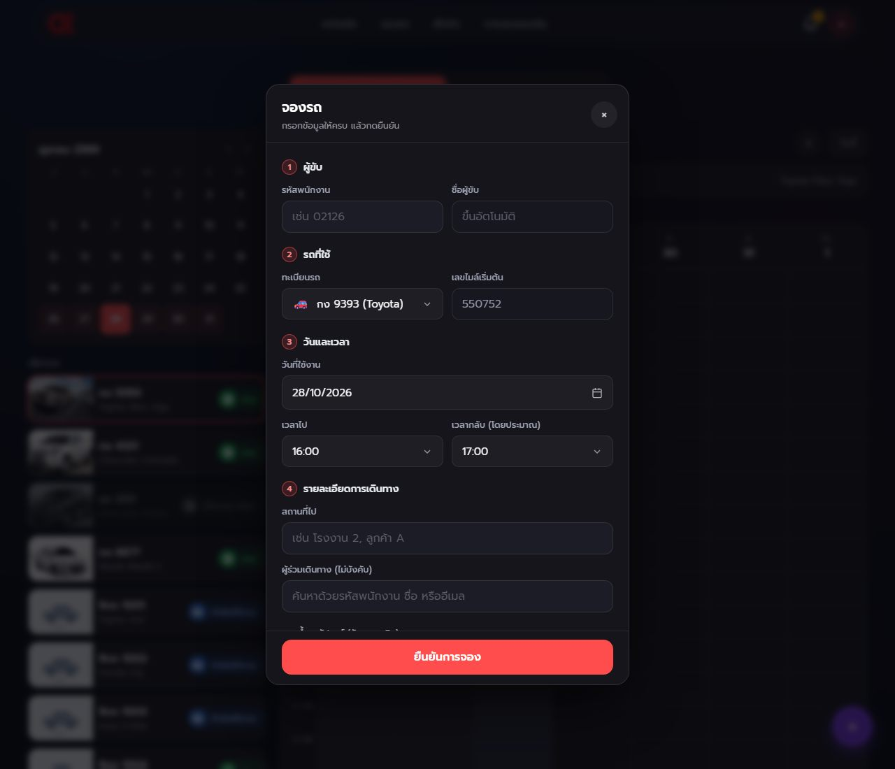
มีคำบรรยายบนจอ (ไม่มีเสียง) กดเล่น/หยุด หรือกดเต็มจอได้
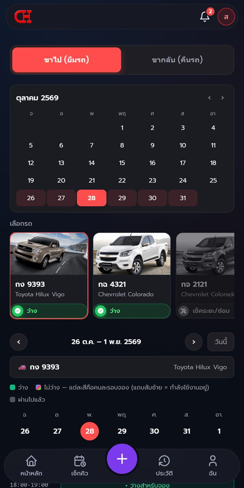
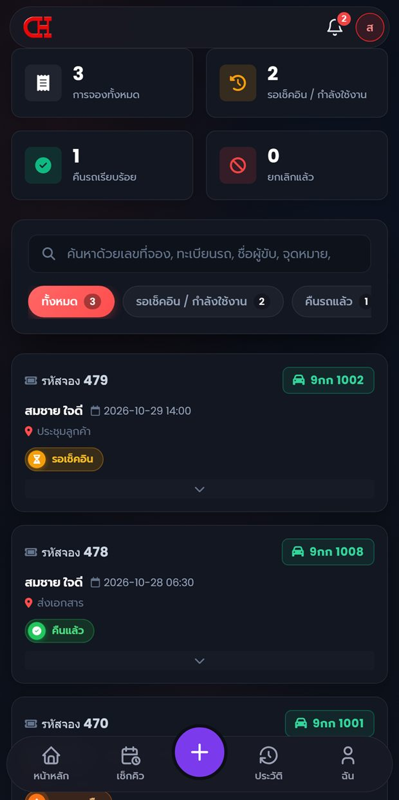
ถ้าจองไม่ผ่าน จะขึ้นข้อความเหล่านี้
| ข้อความ | สาเหตุ / วิธีแก้ |
|---|---|
| ช่วงเวลานี้ถูกจองไปแล้ว กรุณาเลือกเวลาอื่น | มีคนจองรถคันนี้ทับช่วงเวลา ดูตารางแล้วเลือกช่วงที่ว่างหรือเลือกรถคันอื่น |
| ผู้ขับคนนี้มีการจองที่เวลาชนกับช่วงนี้อยู่แล้ว | ผู้ขับคนนั้นมีจองอื่นอยู่ในช่วงเดียวกัน ตรวจที่ "การจองของฉัน" |
| รถคันนี้ไม่พร้อมให้จองในวันที่เลือก (…) | รถเช็คระยะ/ซ่อม ข้อความบอกวันที่คาดว่าจะพร้อม เลือกวันนั้นหรือหลังจากนั้น |
| ช่วงเวลานี้ผ่านไปแล้ว กรุณาเลือกวันที่หรือเวลาใหม่ | เลือกเวลาในอดีต เลือกใหม่ |
| จองล่วงหน้าได้ไม่เกิน 90 วัน | เลือกวันที่ใกล้ขึ้น |
| เวลาไปและเวลากลับต้องไม่ใช่เวลาเดียวกัน | แก้เวลาใดเวลาหนึ่ง |
| ไม่พบรหัสพนักงานผู้ขับนี้ในระบบ | พิมพ์รหัสพนักงานผิด หรือผู้ขับยังไม่ได้สมัครสมาชิก |
| ผู้ร่วมเดินทางมากเกินไป | ลดจำนวนผู้ร่วมเดินทาง (ได้ประมาณ 40 คน) |
| ระบบกำลังประมวลผลรายการจองรถคันนี้อยู่ | มีคนกดจองรถคันเดียวกันพร้อมกัน รอสักครู่แล้วกดใหม่ |
2.4 ดู ยกเลิก หรือปล่อยการจอง
- เมนู การจองของฉัน (หรือ "ประวัติ" บนมือถือ) การ์ดสรุปด้านบน: การจองทั้งหมด • รอเช็คอิน/กำลังใช้งาน • คืนรถเรียบร้อย • ยกเลิกแล้ว
- ช่องค้นหา พิมพ์ได้ทั้ง เลขที่จอง ทะเบียนรถ ชื่อผู้ขับ จุดหมาย หรือวันที่ และปุ่มกรองตามสถานะ
- กดลูกศรขวาของรายการเพื่อดูรายละเอียด: เวลาเช็คอิน เลขไมล์ออก/คืน ระยะทาง และปุ่มยกเลิก
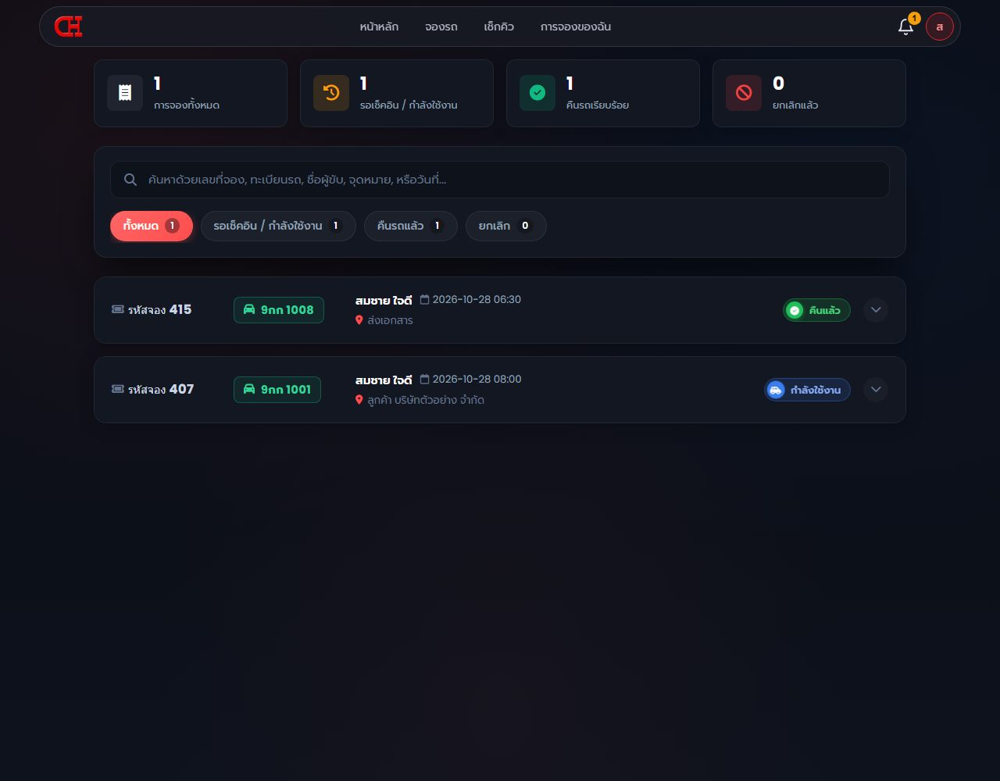
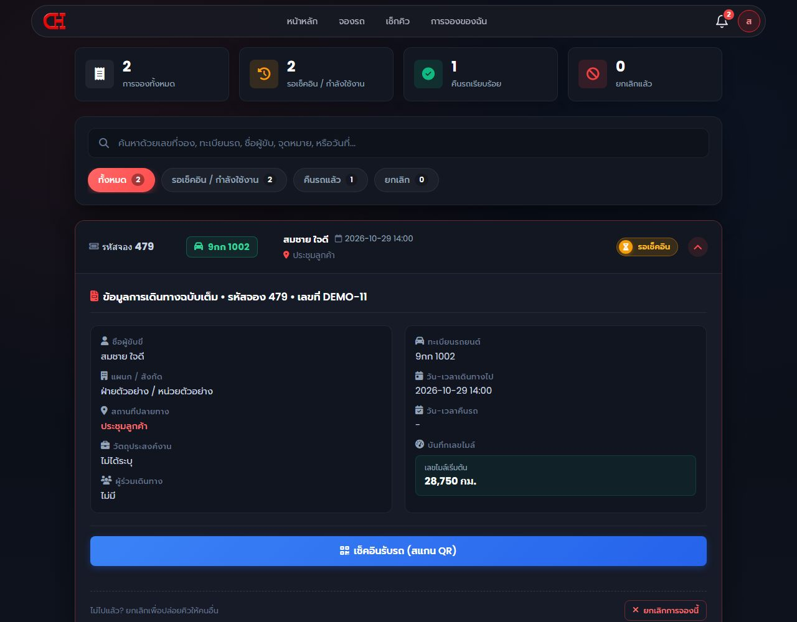
มีคำบรรยายบนจอ (ไม่มีเสียง) กดเล่น/หยุด หรือกดเต็มจอได้
| สถานการณ์ | ทำอย่างไร |
|---|---|
| ยังไม่ถึงเวลาไป ไม่ต้องใช้รถแล้ว | กด ยกเลิกการจองนี้ (ใช้ได้เฉพาะรายการที่ยังเป็น "จองแล้ว") |
| ถึงเวลาแล้ว ระบบเช็คอินให้ แต่ไม่ได้ใช้รถจริง | กด ไม่ได้ใช้รถ (ปล่อยรถ) รถกลับเป็นว่างทันที ไม่ต้องกรอกไมล์ (ใช้ได้เฉพาะรายการที่ยังไม่มีการคืน) |
| รับรถไปใช้แล้ว | ยกเลิกไม่ได้ ต้อง คืนรถ (ดูหัวข้อ "คืนรถ" ด้านล่าง) หรือให้แอดมินยกเลิก |
2.5 รับรถ (วันที่ไปใช้งาน)
มี 2 ทาง ใช้ทางใดทางหนึ่ง
ทาง ก. ไม่ต้องทำอะไร (อัตโนมัติ)
ถึงเวลาไปที่จองไว้ ระบบเช็คอินให้เป็น "ขาไป" เอง (เฉพาะรถที่ไม่มีคนใช้ค้างอยู่) ไปรับกุญแจและขับได้เลย
ทาง ข. สแกน QR ที่รถ
- สแกน QR ที่ติดบนรถ ระบบเปิดหน้า เช็คอินรับรถ
- ตรวจ ทะเบียน ผู้ขับ เวลาที่จอง สถานที่ไป ให้ตรงกับที่จองไว้
- (ไม่บังคับ) กด ถ่ายรูปสภาพรถก่อนออก ถ้ามีตำหนิอยู่ก่อน จะช่วยพิสูจน์ได้ว่ามีมาก่อนใช้งาน
- กดปุ่ม เช็คอินรับรถ (หรือ ยืนยันรับรถที่รถ ถ้าระบบเช็คอินให้แล้วและต้องการยืนยันตัวที่รถ)
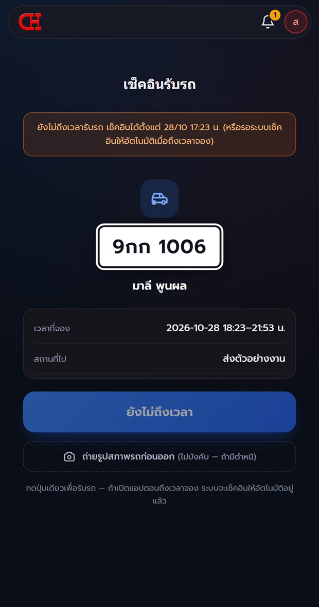
2.6 คืนรถ
เมื่อใช้งานเสร็จ ให้คืนรถ 2 แบบ
แบบ ก. ผู้ขับคืนเองผ่านมือถือ
- จอดรถในพื้นที่บริษัท สแกน QR บนรถ เปิดหน้า คืนรถ (หรือกด "ขากลับ (คืนรถ)" ที่หน้าจองรถ)
- ข้อ 1 เลขไมล์ตอนคืน (บังคับ) — กด "แตะเพื่อถ่ายรูปหน้าปัดเลขไมล์" ระบบอ่านตัวเลขให้อัตโนมัติและบอกว่า "อ่านได้: …" ให้ตรวจกับหน้าปัดก่อนยืนยัน ถ้าอ่านไม่ชัด ระบบให้เลือกเลขที่ตรงกับหน้าปัด หรือกรอกเอง แก้ตัวเลขเองได้เสมอ (ปุ่ม − / + หรือพิมพ์) ต้องมากกว่าเลขตอนออก
- ข้อ 2 รูปสภาพรถ (บังคับ) — ถ่ายรอบคันหรือจุดที่มีตำหนิ
- ข้อ 3 แจ้งปัญหาที่พบ (ถ้ามี) — เช่น ไฟเตือนติด เสียงดัง รอยขีดข่วน
- กด ยืนยันการคืนรถ ปุ่มจะกดได้เมื่อทำขั้นบังคับครบ (แถบความคืบหน้าบอก "เหลืออีก N ขั้นตอน")
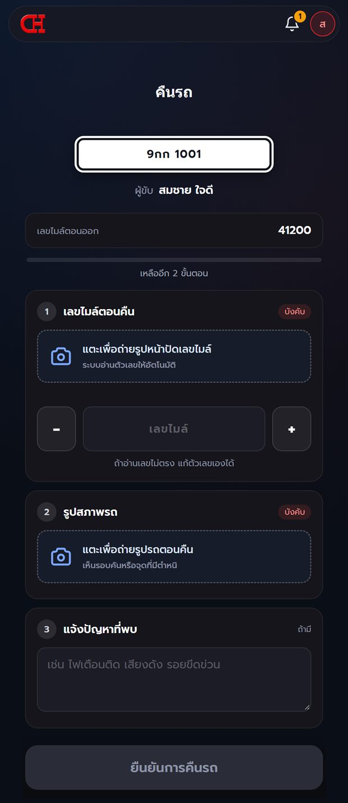
ถ้าระบบตรวจตำแหน่งแล้วคืนไม่ได้ (ขึ้น "คืนรถยังไม่ได้")
| สาเหตุที่ระบบแจ้ง | ทำอย่างไร |
|---|---|
| อยู่นอกจุดบริษัท | ขยับรถ/ตัวเองเข้าไปในพื้นที่ แล้วกด ตรวจตำแหน่งใหม่แล้วคืนรถ |
| ไม่ได้ส่งตำแหน่ง | เปิด GPS/ตำแหน่งของมือถือ และกด "อนุญาต" ให้เบราว์เซอร์ใช้ตำแหน่ง แล้วกดตรวจใหม่ |
| GPS ไม่แม่น / ตำแหน่งผิดปกติ | ออกไปที่โล่งสักครู่ รอให้สัญญาณนิ่ง แล้วกดตรวจใหม่ |
| จำเป็นต้องคืนนอกจุดจริงๆ | กด ส่งคำขอให้แอดมิน พิมพ์ เหตุผลอย่างน้อย 5 ตัวอักษร พร้อมรูปไมล์และรูปสภาพรถ แอดมินอนุมัติแล้วจึงถือว่าคืน (ขึ้น "ส่งคำขอแล้ว") |
แบบ ข. ให้ รปภ. จดให้ที่ประตู
- นำรถเข้าบริษัท
- บอก รปภ. รหัสจอง (หรือทะเบียน/ชื่อ) และ เลขไมล์ 3 หลักท้าย ที่หน้าปัด (เช่น หน้าปัด 52,168 บอกว่า "168")
- รปภ. จดและกดบันทึก ไม่ต้องกดอะไรในมือถือ รายการขึ้น "คืนแล้ว" ทันที
ข้อความที่อาจเจอตอนคืน
| ข้อความ | ความหมาย |
|---|---|
| เลขไมล์ตอนคืนต้องมากกว่าเลขไมล์ตอนออก (…) | กรอกเลขน้อยกว่าหรือเท่ากับเลขตอนออก ตรวจตัวเลขอีกครั้ง |
| ระยะทาง … กม. ผิดปกติ (เกิน 1,500) | พิมพ์เลขผิดหรืออ่านจากรูปผิด ตรวจใหม่ ถ้าถูกต้องจริงให้แจ้งแอดมินบันทึก |
| รายการนี้ไม่อยู่ในสถานะที่คืนได้ | คืนไปแล้ว หรือรายการยังไม่ได้เช็คอิน |
| คุณไม่ใช่ผู้ขับที่ระบุไว้ในรายการจองนี้ | ต้องให้ผู้ขับตัวจริงคืน หรือให้ รปภ./แอดมินบันทึก |
| วันเวลาคืนรถต้องไม่เกินเวลาปัจจุบัน / ต้องไม่ก่อนเวลารับรถ | แก้วันเวลาคืนให้อยู่ระหว่างเวลารับรถถึงปัจจุบัน |
2.7 การแจ้งเตือน และป้ายรถเลยเวลาคืน
กดกระดิ่งมุมขวาบนเพื่อดูการแจ้งเตือน (เลขสีส้มบอกจำนวนที่ยังไม่ได้ดู) ระบบแจ้งให้ผู้ขับเมื่อ:
| การแจ้งเตือน | เมื่อไหร่ |
|---|---|
| มีการจองรถ … | มีรอบจองของคุณวันนี้/พรุ่งนี้ (ก่อนเวลาไปเกิน 60 นาที) |
| อีก N นาทีถึงเวลารับรถ | ก่อนเวลาไปไม่เกิน 60 นาที (ถึงเวลาแล้วระบบเช็คอินให้เอง) |
| เลยเวลารับรถ … มาแล้ว | เลยเวลาไปแต่ไม่เกิน 3 ชั่วโมง ถ้าไม่ได้ใช้รถให้กด "ไม่ได้ใช้รถ" |
| ใกล้ถึงเวลาคืนรถ | ก่อนเวลากลับ 60 นาที เตรียมคืนรถและบันทึกไมล์ |
| เลยเวลาคืนรถ … | เกินเวลากลับที่จอง (สีแดง) |
| ยังไม่ได้ปิดงานคืนรถ (ค้าง …) | เกินเวลากลับเกิน 1 วัน รถยังถูกล็อกไม่ให้คนอื่นจอง ให้คืนรถหรือแจ้งแอดมินปิดงาน |
| การจองถูกยกเลิกอัตโนมัติ | ไม่ได้มารับรถเลยจนเลยเวลากลับ |
| คุณเป็นผู้ร่วมเดินทาง | มีคนเพิ่มชื่อคุณเป็นผู้ร่วมเดินทางในรอบภายใน 24 ชั่วโมง |
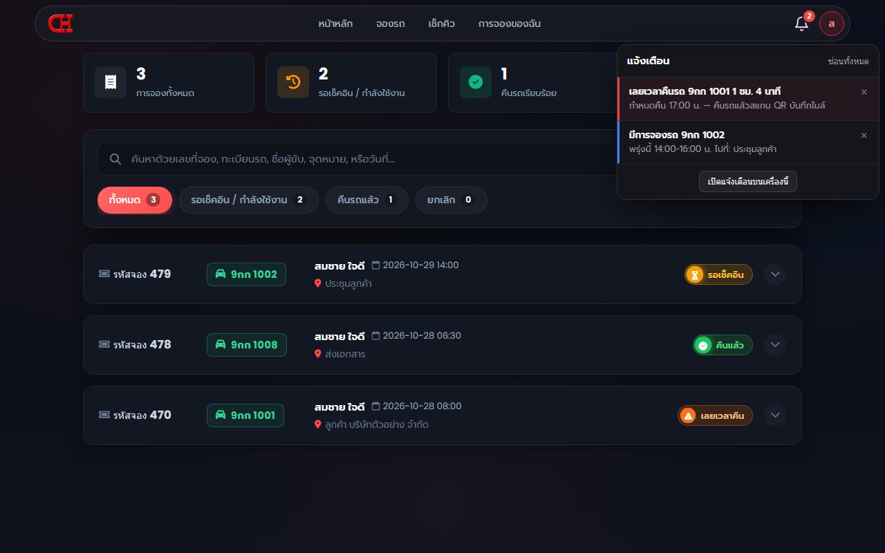
ถ้ามีรถคันใดก็ตามเลยเวลาคืน ผู้ใช้ทุกคนจะเห็นป้ายประกาศ "รถเลยเวลาคืน" พร้อมทะเบียน ชื่อผู้ขับ และเบอร์โทร กดปุ่ม รับทราบ (หรือแตะที่ว่าง) เพื่อปิด ป้ายนี้ไม่ได้หมายความว่าคุณทำผิด แต่ช่วยให้ตามรถกลับได้เร็ว
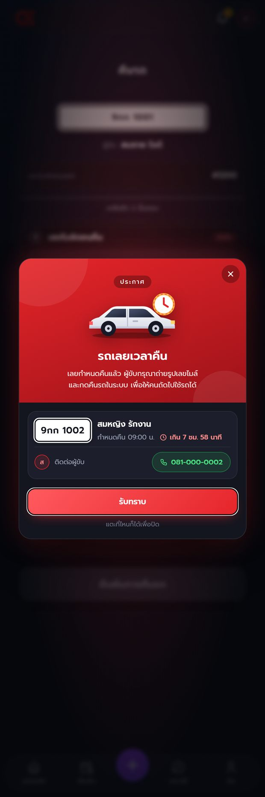
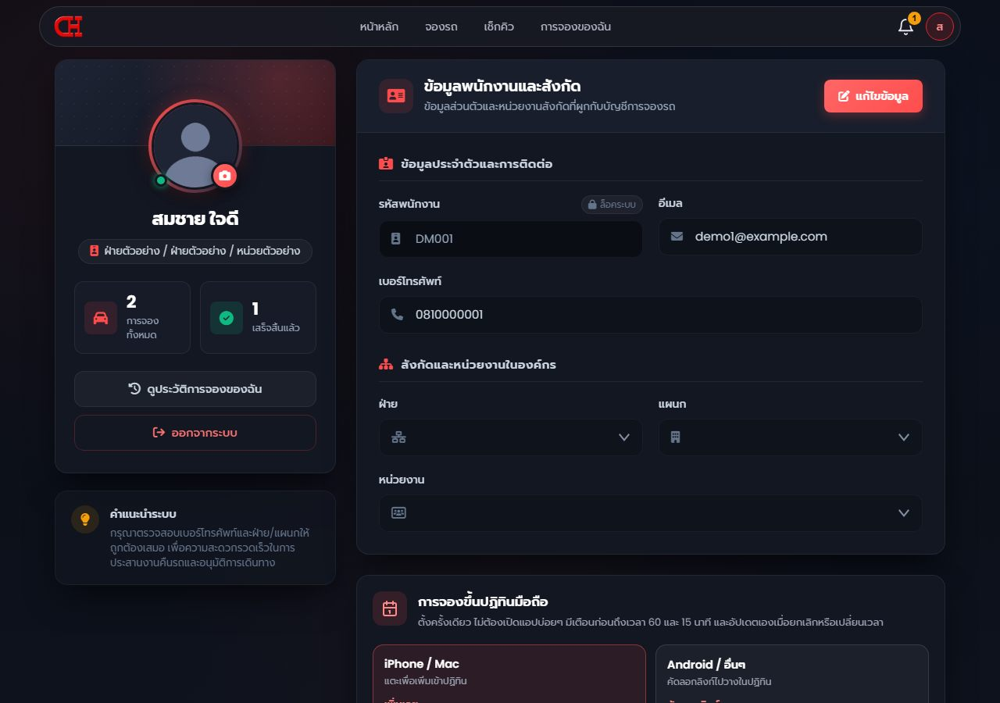
2.8 ข้อมูลส่วนตัว
- คลิกรูปโปรไฟล์มุมขวาบน เปิดหน้า ข้อมูลผู้ใช้ ด้านซ้ายแสดงจำนวนการจองทั้งหมด/เสร็จสิ้นแล้ว ปุ่ม "ดูประวัติการจองของฉัน" และ "ออกจากระบบ"
- กด แก้ไขข้อมูล เปลี่ยน อีเมล เบอร์โทรศัพท์ ฝ่าย แผนก หน่วยงาน แล้วบันทึก (รหัสพนักงานแก้ไม่ได้)
- กดไอคอนกล้องที่รูปโปรไฟล์เพื่อเปลี่ยนรูป
- การจองขึ้นปฏิทินมือถือ — ตั้งครั้งเดียว ไม่ต้องเปิดแอปบ่อยๆ ระบบแจ้งเตือนก่อนถึงเวลา 60 และ 15 นาที และอัปเดตเองเมื่อยกเลิกหรือเปลี่ยนเวลา เลือกแท็บ iPhone / Mac (แตะเพื่อเพิ่มเข้าปฏิทิน) หรือ Android / อื่นๆ (คัดลอกลิงก์ไปวางในปฏิทิน)
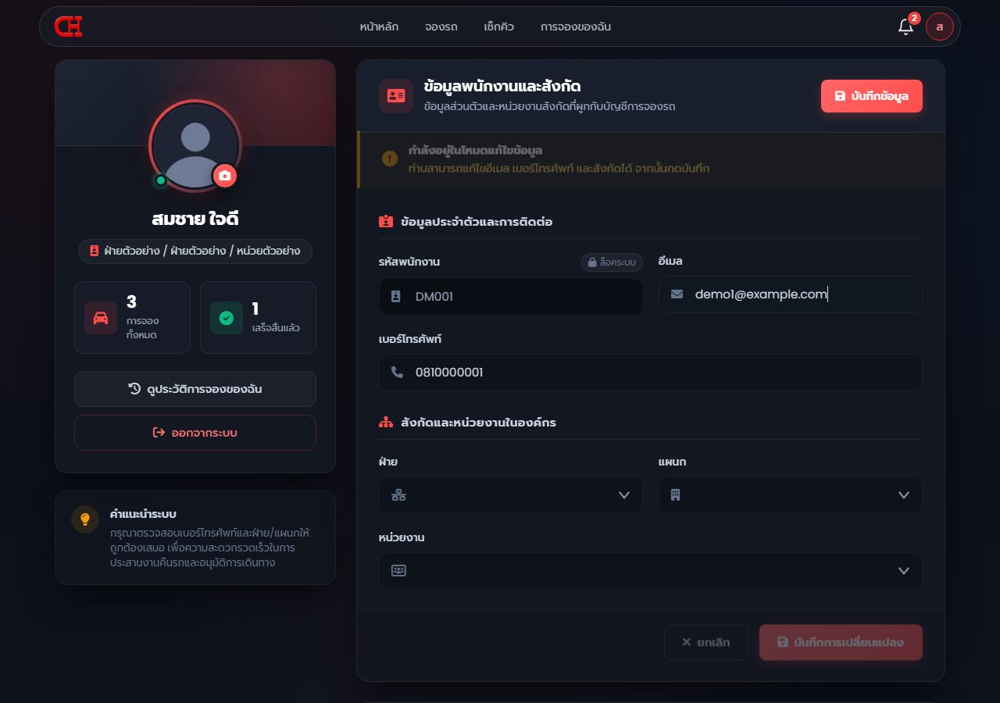
3. กฎที่ระบบทำให้เองอัตโนมัติ
| เหตุการณ์ | สิ่งที่ระบบทำ |
|---|---|
| ถึงเวลาไปที่จอง | เช็คอินให้เป็น "ขาไป" (เฉพาะรถที่ไม่มีคนใช้ค้างอยู่ และ 1 คันต่อ 1 คิว) บันทึกว่าเป็นการเช็คอินอัตโนมัติ เวลาเช็คอิน = เวลาไปที่จอง |
| เลยเวลากลับโดยไม่มีใครมารับรถเลย (ยังเป็น "จองแล้ว") | ปล่อยคิวเป็น "ยกเลิก (ไม่มาใช้งาน)" และแจ้งผู้ขับ |
| รถ "ขาไป" เลยเวลากลับที่จองไว้ | แจ้งเตือนผู้ขับและแอดมิน ขึ้นป้ายประกาศรถเลยเวลาคืนให้ทุกคนเห็น และขึ้นแถบเตือนที่หน้า รปภ. |
| ทุกวัน 20:00 รายการ "ขาไป" ที่เลยเวลากลับที่จองไว้แล้ว | ปิดเป็น "คืนแล้ว" โดย ไม่เขียนเลขไมล์ และไม่แก้เลขไมล์ของรถ ใส่หมายเหตุ "ระบบปิดอัตโนมัติ 20:00 (ไม่มีบันทึกเลขไมล์)" บันทึกเวลาคืน 20:00 รถกลับเป็น "ว่าง" |
รายละเอียดการปิดอัตโนมัติรอบ 20:00
- ปิดเฉพาะ รายการที่เวลากลับที่จองไว้ผ่านไปแล้วตอนถึง 20:00 รายการที่จองกลับหลัง 20:00 (เช่น กลับ 23:00) ยังไม่ถูกปิดในวันนั้น
- ไม่แตะ รายการที่ผู้ขับ รปภ. หรือแอดมินบันทึกคืนไปแล้ว
- ระบบไม่ย้อนปิดรายการเก่าที่ค้างก่อนเริ่มใช้กฎ
- ทำงานเมื่อมีคนเปิดหน้าใดๆ หลัง 20:00 และตอนตัวจับเวลาของเซิร์ฟเวอร์ทำงาน เวลาที่บันทึกยังเป็น 20:00 เสมอ
- ปรับเวลาได้ที่ผู้ดูแลเซิร์ฟเวอร์ (ค่า
AUTO_CLOSE_HOURในไฟล์Car/auto_cancel_noshows.php)
4. แก้ปัญหาที่พบบ่อย และเมื่อไหร่ต้องแจ้งแอดมิน
| ปัญหา | วิธีแก้ |
|---|---|
| จองรถไม่ได้ ขึ้นว่ารถไม่ว่าง | มีคนจองช่วงเวลานั้น หรือรถกำลังเช็คระยะ/ซ่อม ดูหน้า "เช็กคิว" เลือกเวลาหรือรถอื่น |
| รถขึ้นว่าว่างแต่จองไม่ได้ (รถเช็คระยะ) | วันที่เลือกต้องไม่ก่อนวันที่คาดว่ารถจะเสร็จ และวันที่เสร็จเองต้องรอแอดมินยืนยัน แจ้งแอดมินให้กด "ยืนยันรถพร้อมใช้" |
| คืนรถไม่ได้ ขึ้น "คืนรถยังไม่ได้" | ตำแหน่งอยู่นอกจุดบริษัท ขยับเข้าไปแล้วกดตรวจใหม่ หรือส่งคำขอให้แอดมิน หรือให้ รปภ. จดให้ที่ประตู |
| ปุ่ม "ยืนยันการคืนรถ" กดไม่ได้ | ต้องกรอกเลขไมล์และถ่ายรูปสภาพรถให้ครบก่อน |
| ระบบอ่านเลขไมล์จากรูปผิด | แก้ตัวเลขเองในช่องเลขไมล์ได้ ตรวจกับหน้าปัดก่อนกดยืนยัน |
| บอกเลขไมล์ รปภ. ผิด | รปภ. กด "แก้ไข" ได้ถ้าเป็นรายการวันนี้ ถ้าเลยวันแล้วให้แจ้งแอดมินแก้ที่ "จัดการการจอง" |
| ลืมรหัสผ่าน | ใช้ "ลืมรหัสผ่าน?" ที่หน้าเข้าสู่ระบบ หรือให้แอดมินตั้งรหัสใหม่ให้ |
| หน้าเว็บยังเป็นแบบเก่าหลังมีการอัปเดต | กด Ctrl + F5 เพื่อล้างไฟล์เก่าของเบราว์เซอร์ (มือถือ: ปิดแท็บแล้วเปิดใหม่) |
| มือถือไม่ถามขอตำแหน่ง | เปิดบริการตำแหน่งของเครื่อง และอนุญาตให้เบราว์เซอร์ใช้ตำแหน่งของเว็บนี้ในการตั้งค่าเบราว์เซอร์ |
เรื่องที่ต้องแจ้งแอดมินเสมอ
- วิ่งเกิน 1,500 กม. ในทริปเดียว (ผู้ขับบันทึกเองไม่ได้)
- แก้ไขรายการที่คืนแล้วของวันก่อน หรือที่ผู้ขับคืนเอง
- รถเสียหายหรือพบรอยใหม่ที่ต้องส่งซ่อม
- ต้องการเพิ่ม/ลบรถ เพิ่มบัญชี รปภ. หรือรีเซ็ตรหัสผ่าน
- รถหาย หรือผู้ขับติดต่อไม่ได้หลังเลยกำหนดคืนนาน
5. เช็กลิสต์ประจำวัน
ผู้ขับ
- ก่อนไป: เช็กคิว → จอง → จดรหัสจอง
- วันใช้งาน: ตรวจทะเบียน/เลขไมล์ตอนออก (ถ่ายรูปถ้ามีตำหนิเดิม)
- ไม่ได้ใช้รถ: กด "ยกเลิก" หรือ "ไม่ได้ใช้รถ" ทันที
- กลับถึง: คืนรถในมือถือ หรือบอก รปภ. รหัสจอง + เลข 3 หลักท้าย
- คืนกุญแจ